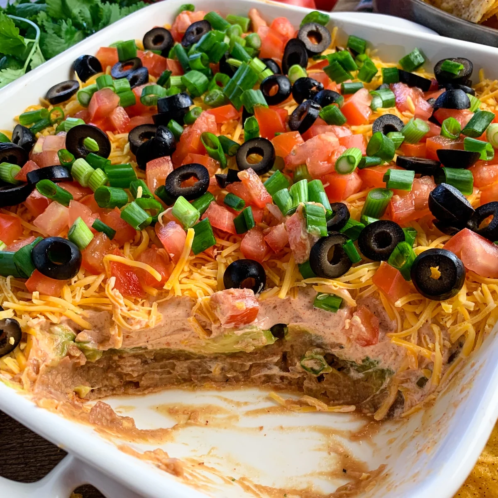

Seven layer dip
Savory and fun, this dip brings the party.
Ingredients
- One 16-oz can refried beans
- 3 large ripe Hass avocados, mashed with 3 tablespoons lime juice
- 2 cups sour cream mixed with one packet taco seasoning
- 3 tablespoons chopped drained canned green chiles
- Two 5 3/4-oz cans sliced black olives, drained
- 2 cups sharp grated cheddar
- Chopped cilantro or scallions
- Tortilla or pita chips to serve
Instructions
- In a 9 x 13 inch baking dish, spread a layer of each ingredient in the order listed.
- Refrigerate until needed, and wrap tightly to transport.
- Serve with tortilla or pita chips.